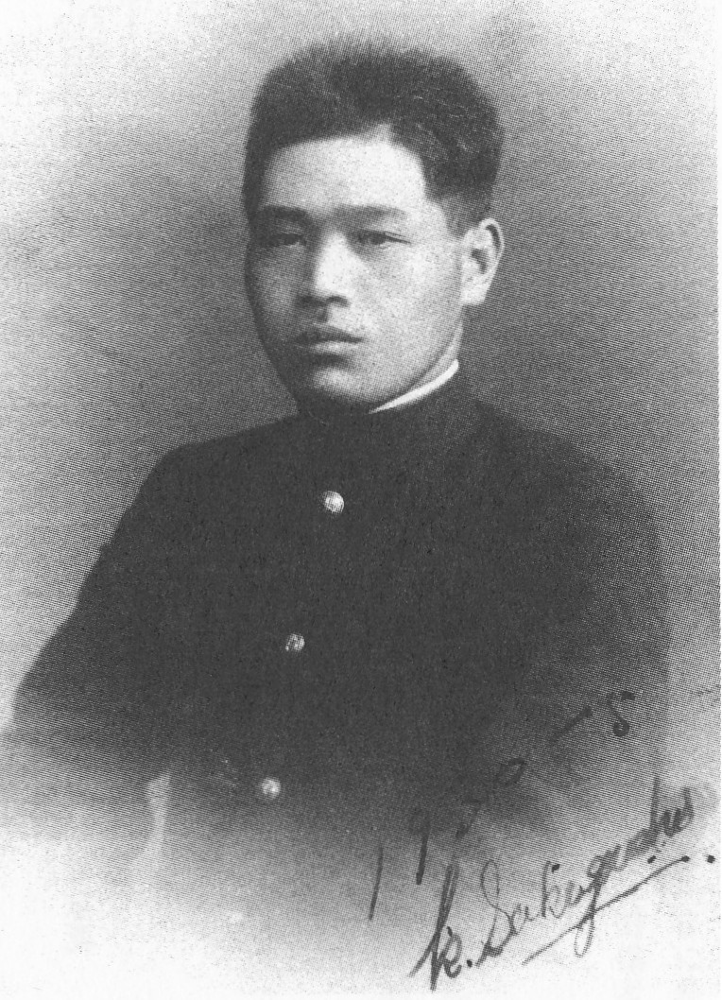

青年坂口喜一郎とサイン
 阪口喜一郎(中央）
阪口喜一郎(中央）
 阪口喜一郎顕彰碑
阪口喜一郎顕彰碑
 現状碑
現状碑
 顕彰碑
顕彰碑
石碑には、「反戦平和、不屈の兵士、阪口喜一郎顕彰碑」と刻まれている。
「聳ゆるマスト」阪口喜一郎の顕彰記念碑建立運動
広島・呉・大阪で顕彰記念碑建立めざす運動が始まった。
広島・呉で顕彰記念碑建立めざして
小栗 勉
（関連書籍・新刊紹介）
無料公開
史伝小説「聳ゆるマスト」 小栗 勉 著（かもがわ出版 1,700円＋税）
治安維持法犠牲者国家賠償要求同盟 機関紙
「不屈」広島県版(阪口喜一郎など反戦兵士関係分を抽出）
戦前の反戦平和運動 1 へ
戦前2「戦争に反対して、命がけで活動した人たちの記録」へ
トップページに戻る